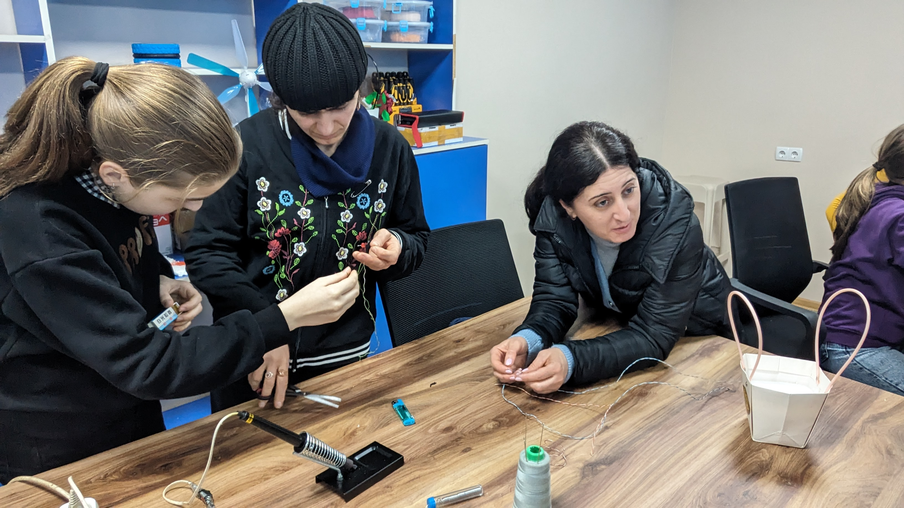
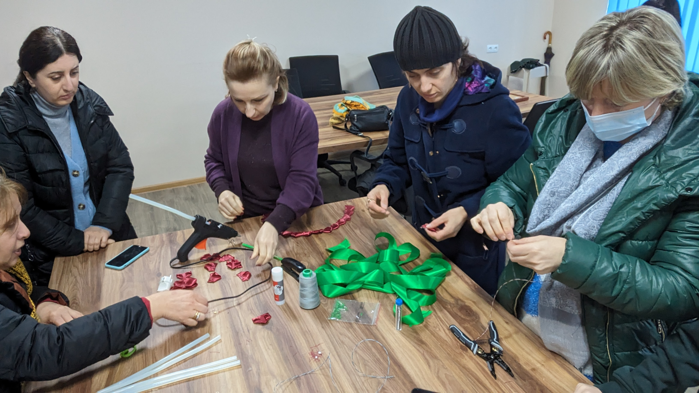
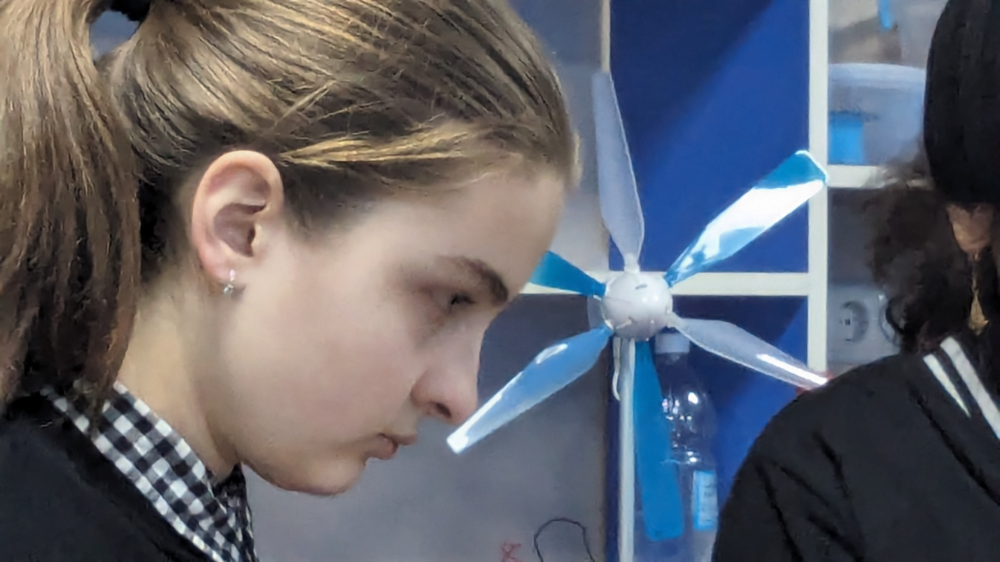

ინოვაციების ინკუბატორები / პროექტი 06
თაიგული.
ხელნაკეთი ყვავილები და შემოქმედებითი მუშაობა — მასალების მომზადებიდან თაიგულის დეტალების აწყობამდე.
ხელნაკეთი დიზაინიგუნდური მუშაობაშემოქმედება
ფოტოები და ვიდეო ↓
პროექტის შესახებ
დეტალებიდან —
ერთად შექმნილ თაიგულამდე.
პროექტი „თაიგული“ ხელით მუშაობას, დიზაინსა და თანამშრომლობას აერთიანებს. მონაწილეები ამზადებენ ყვავილების დეტალებს, აძლევენ მათ ფორმას და აწყობენ ნამუშევარს.
არქივის ფოტოებში ჩანს მასალების მომზადება, საერთო სამუშაო მაგიდასთან იდეების გაზიარება და ყვავილების შექმნის პროცესი. აქ თითოეული დეტალი ერთობლივი საქმიანობის ნაწილია.
ქვემოთ წარმოდგენილია პროექტის რეალური ფოტოები და ვიდეო კლუბის არქივიდან.
პროექტის ალბომი
მუშაობის პროცესი.
რეალური კადრები
კლუბის არქივიდან.

